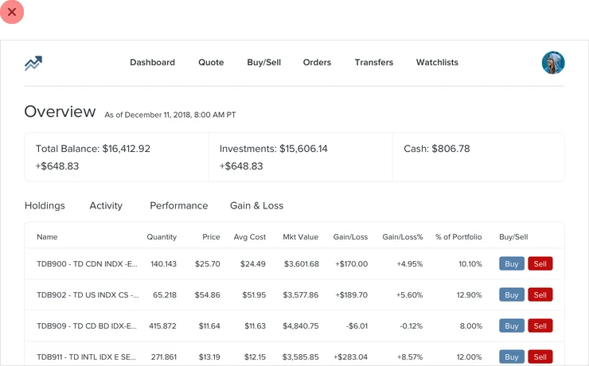
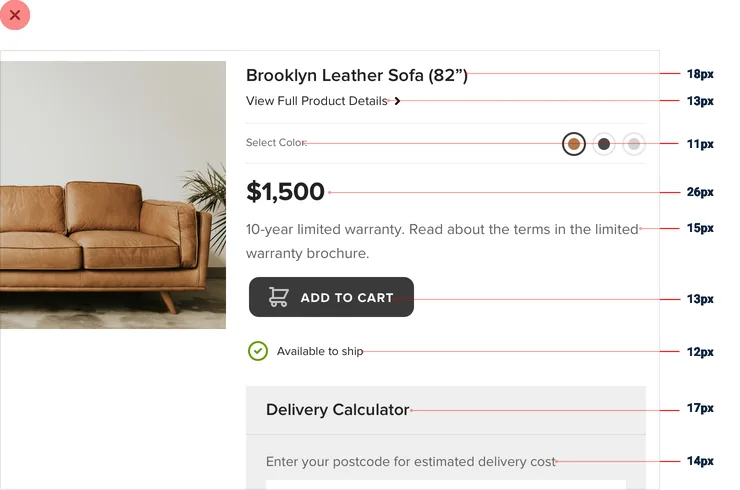
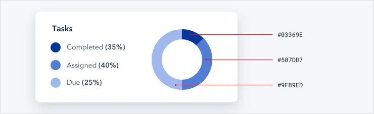
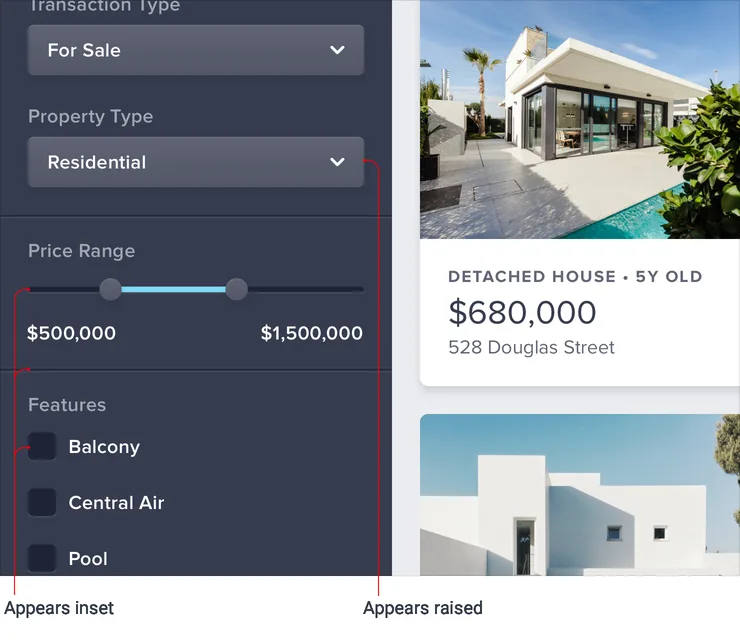
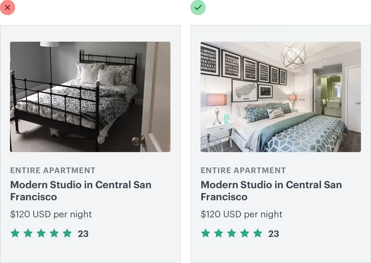
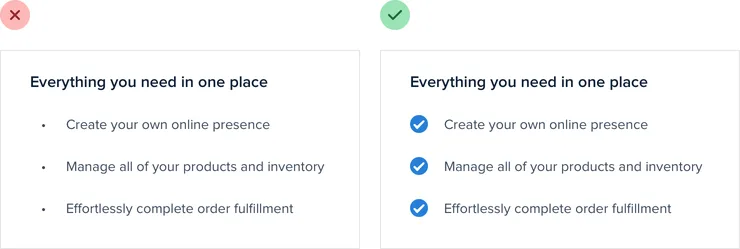
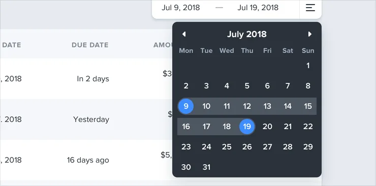

按章读
左侧是章节目录，右侧是本页小节。读到哪，进度记到哪，下次从断点继续。
HOW TO READ
左侧是章节目录，右侧是本页小节。读到哪，进度记到哪，下次从断点继续。
每章埋了可操作的实验：拖滑块、切方案、做测验。设计是手感，不是知识点。
Ctrl K 搜全书，按「留白」「色阶」「层级」这样的术语直接跳到小节。
CONTENTS
从「先做一个真实功能」到「持续进阶」，原书结构完整保留。








LIVE FIGURES
原书里的关键示例被重建成真的 HTML 界面：滑块、开关、选项都能直接动手。原书截图仍在每张图里，一按切换。